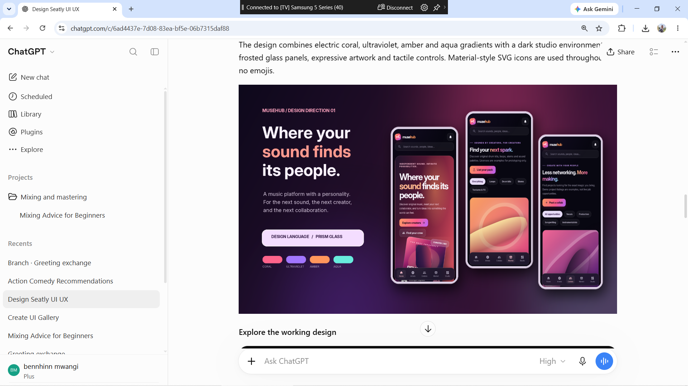

Where your sound finds its people.
MuseHub brings the next sound, the next collaborator and the next creative idea into one musician-first space.
An interactive product-design prototype exploring how artists discover each other, share sounds and move ideas forward.
Explore the experience ↓
A creative home.
Room to make more.
Music-making spans discovery, relationships, tools and unfinished ideas. MuseHub explores bringing those activities together in a space shaped around creators.
The supplied design combines a dark studio atmosphere with frosted panels, tactile controls and expressive gradients. Its interactive screens make that direction tangible.
From inspiration to collaboration.
Nine connected views. One creative environment.
Discover your people
Browse artists, filter by sound and explore creator profiles through fictional demo content.
Artists & discovery ↗ 02Find your next collaboration
Explore creative roles, express interest and add a collaboration to the demo board.
Collaboration board ↗ 03Shape a new sound
Browse sample sound-pack listings, hear synthesized previews and explore the licensing flow.
Sound marketplace ↗ 04Keep ideas moving
Create a demo project, explore the studio and switch between balanced lighting and neon stage mode.
Creator studio ↗Also explore live rooms, rights drafts, demo conversations and artist profiles. This is a front-end prototype: purchases, messages, events and rights actions are simulations. Demo changes reset when the page reloads.
Step into MuseHub.
Explore the screens, filter artists, create a demo project or play a synthesized sound preview.